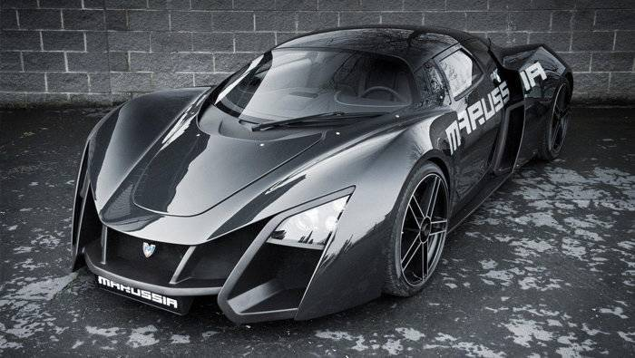

Nissan GT3 Nismo
O carro, que é voltado para competições automobilísticas, recebeu melhorias em relação ao modelo 2012. De acordo com a montadora, a principal delas é a revisão do motor 3.8 V6 biturbo, de 543 cavalos
Quanto à aerodinâmica, o novo GT-R NISMO GT3 ganhou novas aletas no para-choque dianteiro, vincos laterais e teve seu aerofólio traseiro reformulado. Por dentro, melhorias no câmbio, freios e suspensões
O modelo será fabricado mediante encomenda junto à planta da Nissan no Japão. O preço para o mercado japonês, América do Norte e América do Sul será de US$ 431 mil. Já para a Europa, o valor é um pouco elevado
|
 |